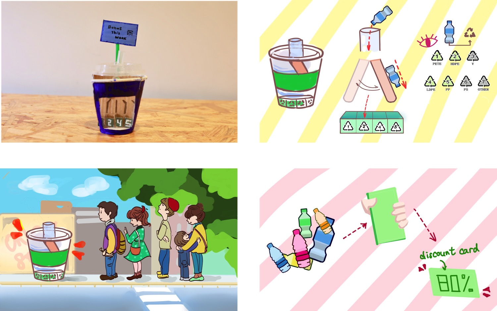
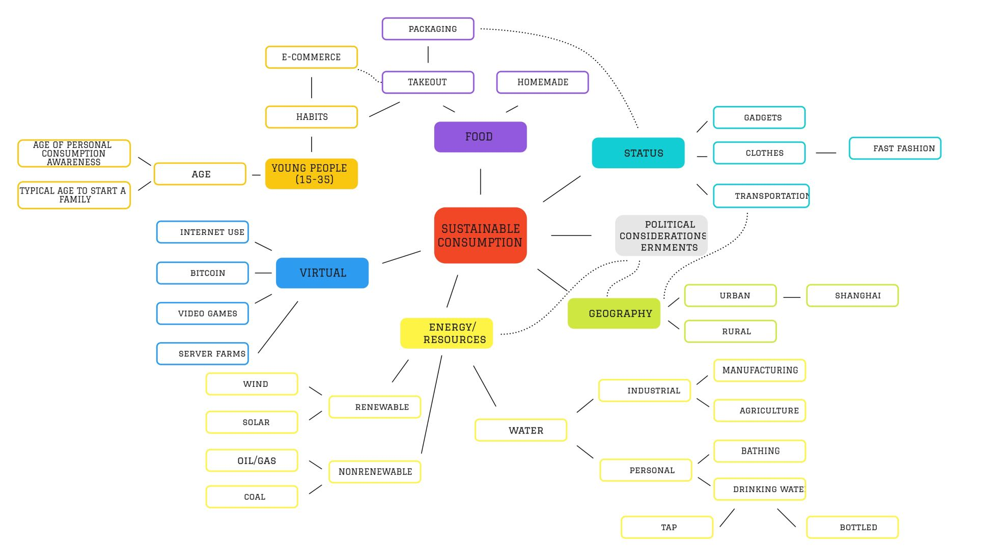
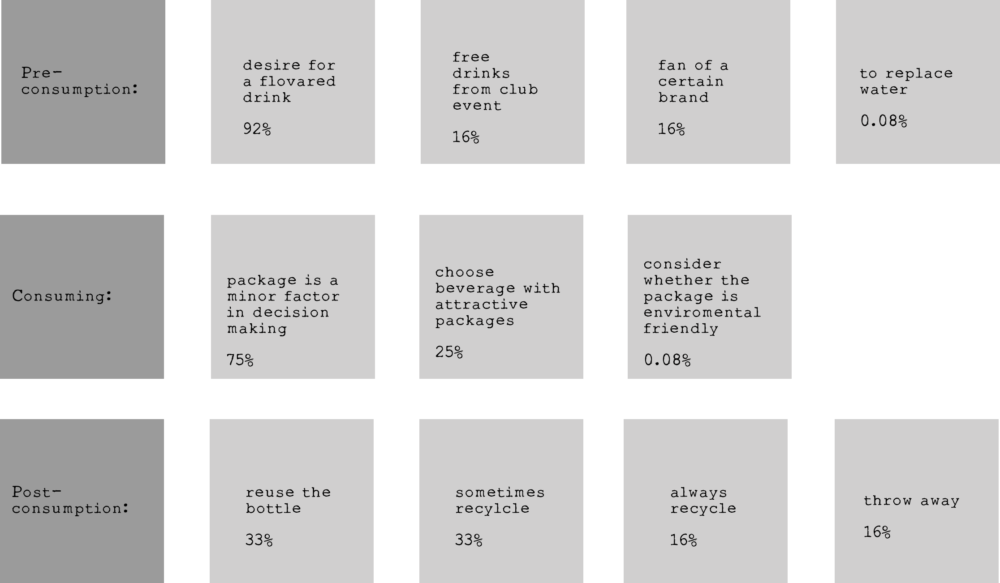
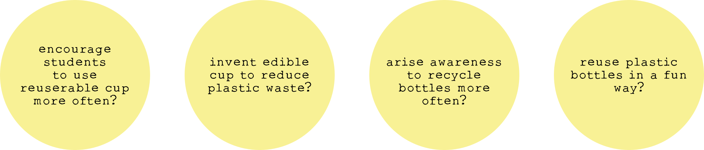
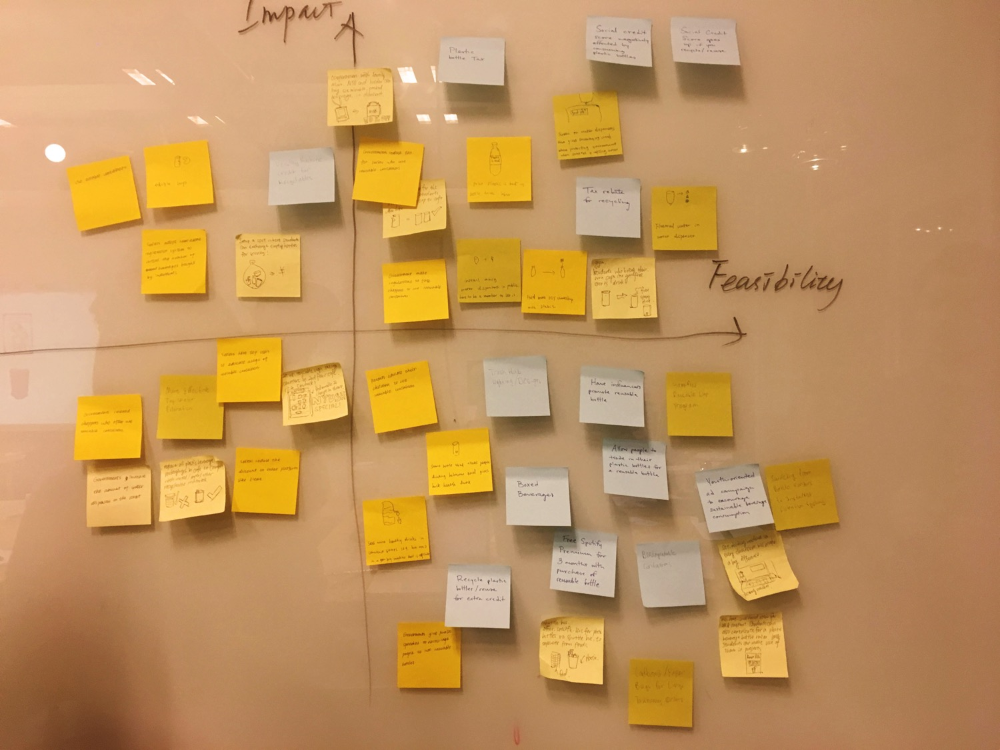
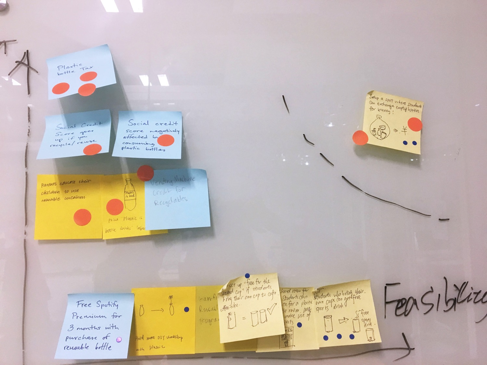
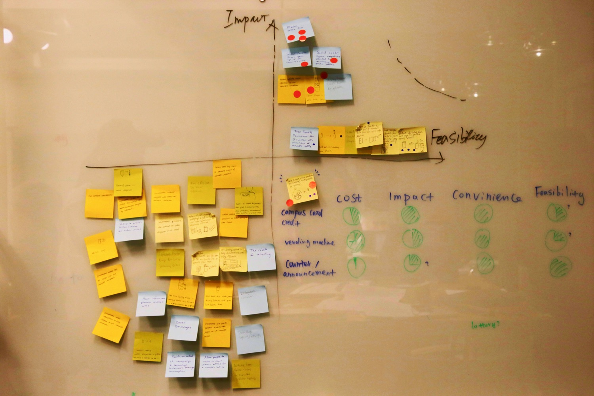
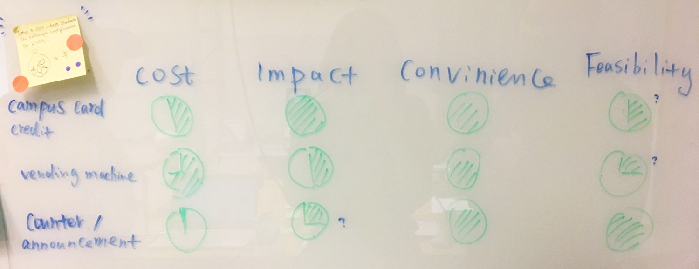
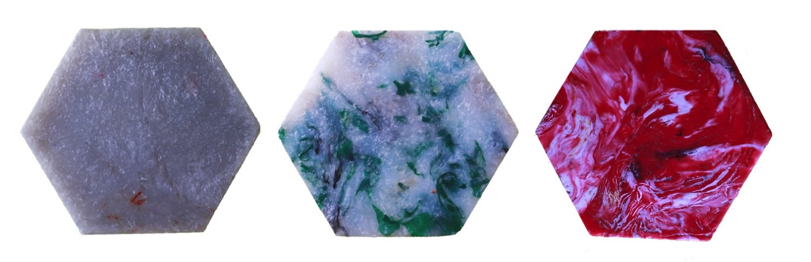

Project Name // Re-Vent
Team // Kitty, Emma, Osman, Iyad
My Role // team members share responsibilities equally
Course // Design Thinking
Project Description
Re-Vent is a sustainable plastic bottles reuse system designed for NYUSH. The reverse machine will swallow empty plstic bottles and automatically classify them into five different types of plastic. In return, the system will run a weekly lottery among students who contribute to the recycle process. The classified bottles will be reused for making beautiful plastic art in NYUSH Remade China Lab.
Prototype
Design Prompt
How might we improve sustainable consumption among young people?
Sustainable consumption lies in every aspects in our lives. We first drew out a mind map together to demonstrate our interests.
We then narrow down the topic to "how might we encourage sustainable beverage consumption among college students in China?"
Why beverage?
According to National Bureau of Statistics of China,
More than 15 million tons of single-use plastic are consumed each year in China;
In 2018, beverage consumption reached $66 billion in China, and is expected to grow annually by 10.3%;
In 2018, every Chinese is estimated to create $48 in revenue for the beverage industry.
Primary Research and Insights
We conducted interviews with 12 NYUSH students, and asked them about their beverage consumption habits.
We learnt that:
· Students have very different incentives to drink beverage other than water;
· For most students, water cannot replace beverage;
· Students tend to recycle better if the trash bins are clearly instructed.
Opportunity Areas
Ideate
Each of us wrote down 20 ideas and picked 5 best ones to share with the team. Then we created an impact-feasibility graph quadrant and posted our ideas inside the axes.
Then we use big orange and small blue post-its to vote on our ideas. Orange dots: impact; blue dots: feasibility. The idea voted with the most points is “reverse vending machine”, a machine that swallows plastic bottle and gives back campus cash.
  Reframe design question
How might we encourage plastic bottle recycle in an efficient way, and remake the plastic into something useful?
User Testing and Feedbacks
We conducted expert interviews and found out:
· Plastic can be classified into 7 types, in which Type 1 (PET), 2 (HDPE), 4 (LDPE) and 5 (PP) are safe to reuse;
· All plastic bottles mark their plastic type at the bottom of the bottle;
· NYUSH Remade China Program has machines that can melt plastic and reshape them into other object - bowls, coasters, for example.
· The Program now classifies different plastic manually and it is a lot of work.
Note: Coasters made from plastic by Remade China class student Alison.
We decided to collaborate with the program to reuse the plastic bottles we collected from the Re-Vent machine.
Reward system - Make recycling into a game!
We did a survey with 50 students and asked them about their preferred rewards. While some of them like guaranteed small rewards, some of them prefer possible large rewards. Many students like the idea of a lottery - they like surprises.
Considering that the plastic itself does not worth too much, and our project core concept is about sustainability, we decided to run a lottery per week among the participants, and the gift would be resident hall laundry machine credit or coupons to school cafeteria.
We will also create a leaderboard to show how many plastic bottles one contributes per week. A counter will also count how many bottle wastes Re-Vent machine saves in total. Let recycling be a game! - a bit of fun is the key.
Persona
Linna
Age: 20
Linna is a sophomore year student at New York University Shanghai. She drinks beverage 3-4 times a week, and her favorite drink is milk tea. Linna usually will recycle her waste bottles in school, but she would not do it if she is in a rush.
Linna is happy to reuse the bottles if there are convenient solutions. It would be the best if she can get some rewards from the good act, because she feels she needs some motivations to keep up recycling before developing it into a habit.